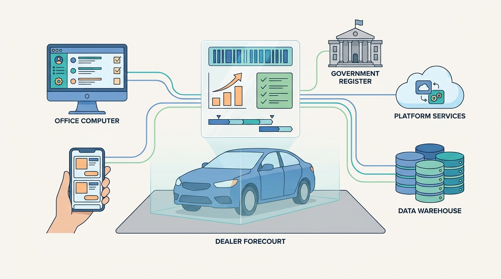

Image generated by Google Gemini (gemini-3-pro-image-preview)
Architecting a Vehicle Data and Dealer SaaS Platform
How architects and engineering leaders design, integrate, operate and evolve platforms that turn registers, build data, history records and market data into vehicle identity, history and value — and put that data to work in the daily workflows of dealers, dealer groups, traders and lessors, from identity and valuation to syndication, leads, registration, tenancy and billing. This is a living journal and a work in progress: I revise it as I learn more through my work.
No posts match your search.